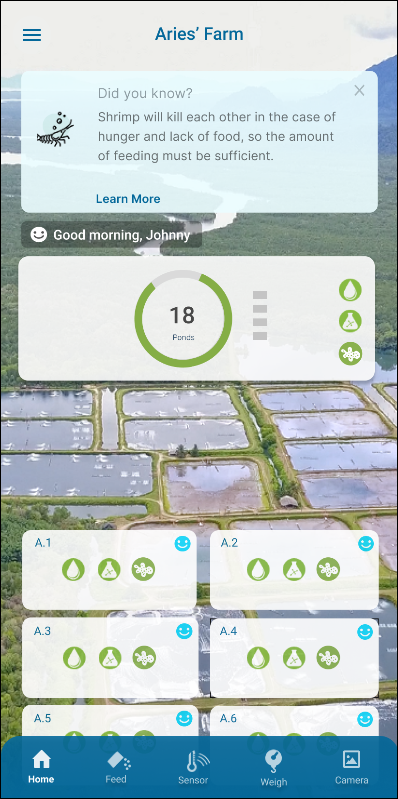

Sector
Aquaculture
Overview
AquaEasy is an intelligent aquaculture solution that combines sensors, software, and AI analytics to help shrimp farmers improve predictability, productivity, and sustainability in inland shrimp farming. The platform relies on user-generated farm data (e.g., feeding records, lab results, shrimp measurements) to produce actionable recommendations.

Prototype home screen dashboard
Problem Context
Shrimp farming is highly dependent on accurate data for effective decision-making. Although AquaEasy’s AI can generate useful recommendations, it requires regular, timely data entry from farm technicians and farmers. On the ground in Indonesia and Vietnam, we observed that:
- Users saw data entry as extra work, not a core part of their job.
- Designed a gamified mobile interface to encourage consistent, accurate data entry
- Prototyped interactive flows to validate usability, engagement, and data accuracy
Role & Scope
UX Designer · End-to-End Flow Design · Mobile UX
Research & Discovery
Due to geographical and operational constraints, direct field research was not conducted by the design team. Instead, insights were gathered through regular knowledge sharing with business development colleagues who worked closely with shrimp farmers and pond technicians on the ground in Indonesia and Vietnam. These colleagues acted as proxies for user research, sharing recurring observations, objections, and behavioral patterns they encountered during farm visits, onboarding sessions, and post-sales support.
Target users: Pond technicians and shrimp farmers in rural regions of Indonesia and Vietnam.
Context: These users typically have limited formal education and work in environments where time is valuable and tasks are physically demanding.
Observations highlighted:
Based on repeated feedback and observations shared by business development and field teams:
While the AI system relied heavily on consistent data input, the real bottleneck was human behavior, not technology.
The core UX challenge became: "How might we make data entry feel immediately valuable and worth the effort for farm technicians?"
Context: These users typically have limited formal education and work in environments where time is valuable and tasks are physically demanding.
Observations highlighted:
Based on repeated feedback and observations shared by business development and field teams:
- Data entry was seen as non-essential extra work.
- Users didn’t experience immediate benefit if they didn't see early feedback loops from the AI.
- Tasks like entering average body weight, lab data, and feeding history were often skipped.
While the AI system relied heavily on consistent data input, the real bottleneck was human behavior, not technology.
The core UX challenge became: "How might we make data entry feel immediately valuable and worth the effort for farm technicians?"
Design Approach
🎯 Design Goal
Increase consistent and meaningful data entry so that the AI can generate stronger farming recommendations — ultimately improving farm performance while reinforcing positive user habits.
To address lack of engagement, I proposed introducing gamification features to make data entry feel rewarding rather than burdensome.
Key idea:
Create a rewards program where users earn points for entering data. Points can be redeemed for real-life rewards valuable to this user group (e.g., mobile prepaid top-up cards, grocery gift cards).
What we designed:
- Data entry earns AquaPoints.
- Different tasks earn different point values based on effort (e.g., lab data > feeding records).
- Teams work together — collective points determine end-of-cycle rewards.
- Role-based point assignments make tasks feel meaningful and fair.
Prototype & Screens

Rewards dashboard: Shows current points, team rankings, and target rewards.

Task completion screens: Clearly communicate points earned per entry.
After launching the rewards program:
- Data entry rates increased by ~30% within a few months.
- Users requested more tasks be included in the rewards system.
- The introduction of team-based incentives built healthy competition and camaraderie among pond staff.
- More data meant the AI could generate more accurate and actionable recommendations for farmers.
Reiteration & Improvements
Based on user feedback:
- Adjusted point weights to better reflect task difficulty.
- Built team-based reward mechanics to encourage collaboration.
- Further UX refinements focused on positive feedback loops every time a user logs a task.
Outcome & Impact
- Increased data entry by ~30%, improving the reliability of AI insights
- Positive user feedback led to expanding the system to additional farm management tasks
- Streamlined the daily workflow of farm technicians while maintaining high-quality AI-driven recommendations
💭 What I learned
Good UX doesn’t just make tools easier, it shapes behavior. By understanding real motivations and constraints, we transformed a task that felt like “extra work” into one that felt valued and worthwhile.
Good UX doesn’t just make tools easier, it shapes behavior. By understanding real motivations and constraints, we transformed a task that felt like “extra work” into one that felt valued and worthwhile.
- This project reinforced that in complex, real-world environments, behavioral constraints matter more than interface polish.
- Gamification was effective not because it was playful, but because it acknowledged effort, provided immediate value, and aligned user motivation with system needs.
- With more time and access, I would validate incentive structures directly with users and explore non-monetary reinforcement for long-term sustainability.